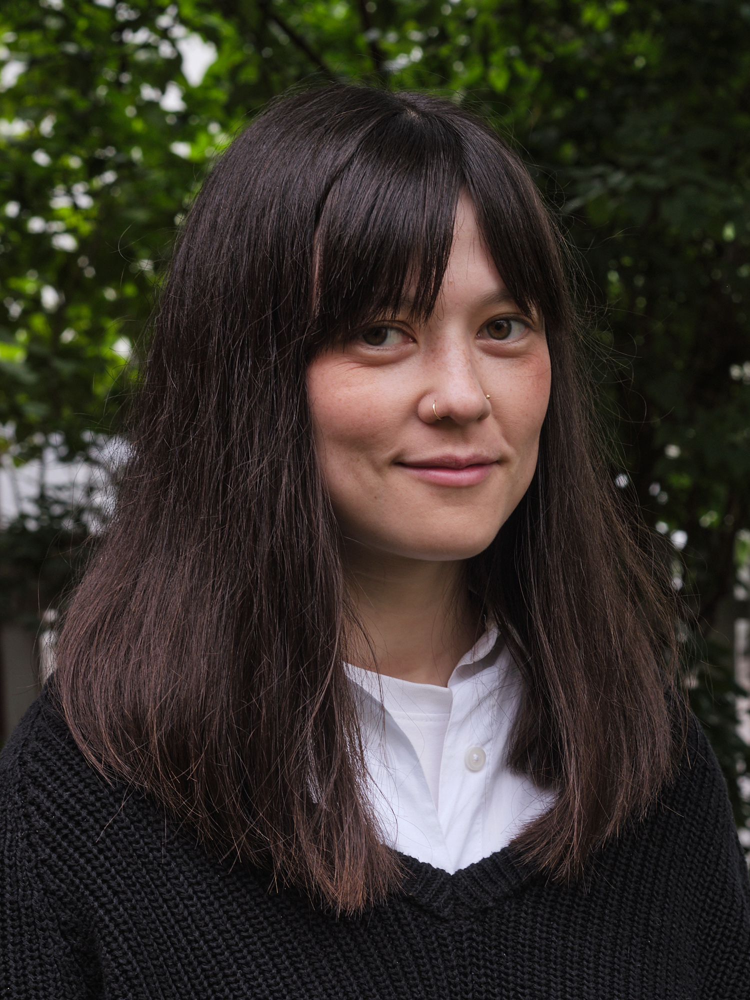

7/3/25: I have accepted an offer for a postdoctoral research position at the University of Amsterdam starting on 1. April.
I will be working under the Research Priority Area in Human(e) AI and I will be affiliated with the
Institute for Logic, Language and Computation (ILLC).
24/1/25: I was interviewed by Khrono, Norwegian newspaper for higher education and research, about my PhD and my hobbies.
You can read the article here.
2/12/24: I was invited to speak at the workshop Methodology of Logic at the University of Padova, Italy.
27/11/24: I presented at the annual conference for the Australasian Association for Logic in Sydney, Australia (online).
15/11/24: I was inducted into the Logicians Liberations League as Magister of Malicious Networks
by Shawn Standefer, Andrew Tedder and Thomas Ferguson.
14/11/24: I was invited to speak at the workshop Variable Sharing Properties and Their Discontents at
Rensselaer Polytechnic Institute (RPI) in Troy, NY.
27/9/24: I successfully defended my PhD thesis at the University of Bergen.
My committee consisted of Zoé Christoff (University of Groningen), Patrick Blackburn (Roskilde University)
and Fernando Velázquez Quesada (University of Bergen). It was a very special day.

(Photo credit: Sebastian Guha Skjulhaug)
About Me
I am a logician, hobby organist,
esperantist and devoted backgammon player.
I also occasionally write and translate texts about film or popular science.
My academic interests lie in the intersection of mathematics and philosophy, ranging from
the philosophy of mathematics to logic and formal epistemology.
I am currently working as a postdoctoral researcher in the Research Priority Area in Human(e) AI at
the University of Amsterdam, where I am affiliated with the Institute for Logic, Language and Computation (ILLC).
Before I started my job in Amsterdam, I completed a PhD in Information Science in the Logic & AI research group at the University of Bergen, under the supervision of Marija Slavkovik, Thomas Ågotnes and Sonja Smets. The thesis was about using modal logic to research agents in multi-agent systems who act unexpectedly, or try to take advantage of the system for their own gain. You can read my thesis here.